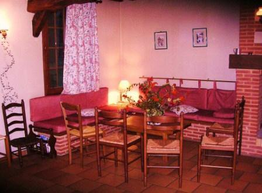
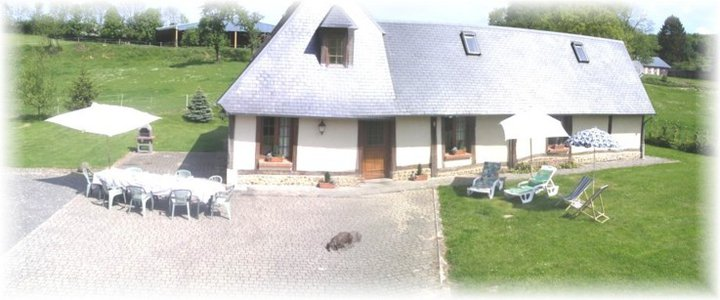
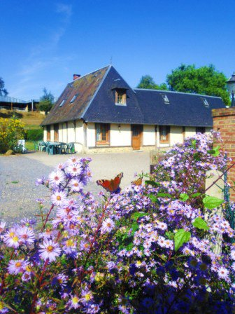
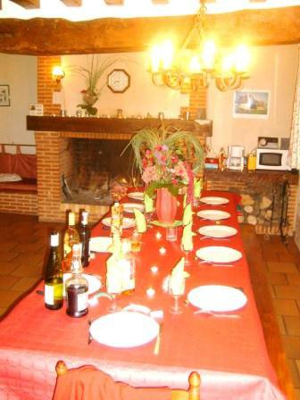

Ambiance chaleureuse
Cheminée, poutres anciennes et volumes généreux pour se retrouver en famille ou entre amis.
Ancienne grange restaurée avec poutres et grande cheminée, idéale pour des séjours en famille ou entre amis, jusqu’à 12 personnes, à 2 km de Lyons-la-Forêt, en lisière de la forêt.
Demander des informations
À Lorleau, à seulement 2 km de Lyons-la-Forêt, le Gîte du Héron vous accueille pour une parenthèse de calme au cœur de la campagne normande.
Ancienne grange restaurée, il marie le charme des poutres anciennes, la chaleur d’une grande cheminée et le confort moderne, dans un cadre naturel préservé.
Jusqu’à 12 personnes
5 chambres
Jardin privé
Barbecue
Parking sur place
Cheminée & poutres
Wi-Fi gratuit
Animaux acceptés
À 2 km de Lyons-la-Forêt

Cheminée, poutres anciennes et volumes généreux pour se retrouver en famille ou entre amis.

Pelouse, mobilier de jardin, barbecue et parking intérieur pour profiter pleinement des beaux jours.

Grande pièce de vie avec bar et table de 4 mètres pour des repas partagés en toute simplicité.
Lyons-la-Forêt et la forêt domaniale sont accessibles en quelques minutes.
Marché du dimanche, commerces et Office de tourisme.
Balades et randonnées au cœur de la hêtraie.
Équitation (poney-club) et pêche à l’étang.
Nous vous répondons rapidement avec un devis adapté à vos dates et au nombre de personnes.
Demander des informations